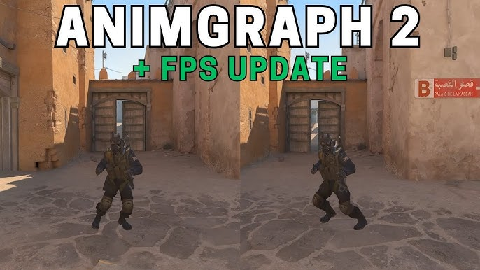

1. Movimiento mas natural
Las animaciones ahora se adaptan dinamicamente a la velocidad y direccion del jugador eliminando cortes bruscos y mejorando la lectura visual en el juego.
Animgraph es la nuevo gran update del juego counter strike 2 en el que podemos observar un nuevo sistema de animaciones que permite transiciones mas fluidas y un movimiento de la camara en primera persona o tambien conocida como (POV) que la vuelve mas realista a la hora de ver las armas y el retroceso.
Las animaciones ahora se adaptan dinamicamente a la velocidad y direccion del jugador eliminando cortes bruscos y mejorando la lectura visual en el juego.
El retroceso ahora se refleja mejor en el modelo de arma de cada jugador ayudando a comprender el patron de disparo y dando claridad de la direccion de balas.
Las animacionesestan mas alineadas con el estado real del servidor, reduciendo inconsistencias visuales y mejorando la competitividad.
La optimizacion en la actualizacion Animgraph no fue "Significativa" pero si ayudo a jugadores que necesitaban un poco de fps con una mejora en promedio de (50FPS).
Imagen con ruta absoluta:

Imagen con ruta relativa:
